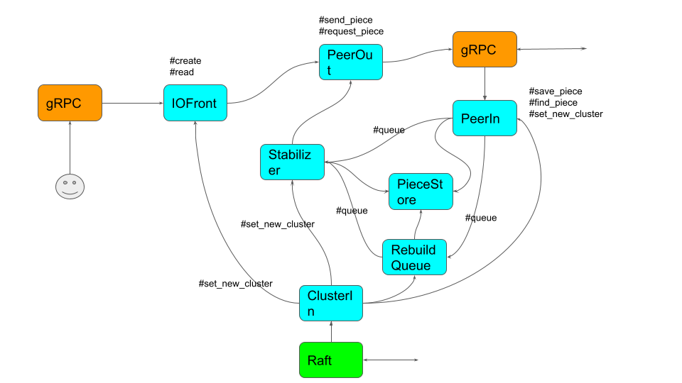

Introduction
After knowing about the concept of \( \infty \), everyone has once used to get addicted to it.
So, scale-out distributed storage is a man's dream. The performance and the capacity will be infinitely scaled up by adding more servers to the cluster.
However, in practice, it is not easy to implement a infinitely scaling out distributed storage when node failures should be considered.
The goal of this project Sorock is to implement a fully automatic perfect scale-out distributed storage that will never lose data in more than eleven nines SLA level.
The modernest Rust language is chosen to build a quality software.
Architecture
Overview
Sorock implements the server using Tonic so all external communication is done by gRPC.
Tonic allows to stack gRPC services in the server.
Sorock uses Raft consensus algorithm to replicate the cluster change because all nodes have to at least eventually see the same cluster state and replication should be quick enough. Some other system uses gossip protocol to disseminate the cluster change but using Raft it will be more quicker.
Raft service builds the ASURA data structure based on cluster changes and then it is passed to Storage service.
Storage service is responsible for handling user requests but lot of p2p communications are executed in the cluster. When the cluster is changed, it tries to move the erasure-coded pieces to the appropriate nodes and rebuild a piece if it is lost.

Microservices
The internal of the Storage service is implemented as a group of in-process microservices.
norpc is a library to design async application that in-process microservices running on Tokio runtime communicate each other using RPC over messsage channel. You can learn more about the library in this doc: norpc book.
This project is not only a aspiring distributed storage project but an experiment in software architecture. My question is "Can norpc design async application better?". To search for the answer, the internal of Sorock is designed this way.

API
Sorock provides only simple APIs.
Create(Key, Value)
Create a key-value pair in the storage. Key shouldn't be reused for any two different values. Typically, the key is generated from the value using hash function like SHA1.
Read(Key)
Read the value from the storage.
Delete(Key)
Delete the key-value pair.
AddNode(URI, Capacity)
Add a node in the cluster. Regarding the Capacity, recommendation is setting x if the node has xTB local storage.
RemoveNode(URI)
Remove a node from the cluster.
Math
We can give a theoretical analysis to Sorock by doing some maths.
How many pieces are moved on cluster change?
In computing N holder nodes for a key, computing the holder node for each (key, index) pair independently is a local-optimal solution. In this case, it is guaranteed that only one piece is moved per key for any one cluster change but occasionally happen to place all pieces in one node which lose the redundancy we hope to have: for (N,K) erasure coding we should be allowed to lose N-K pieces.
So choose N independent holders and let's estimate how many pieces are moved per cluster change.
Suppose the placement before cluster change is S1,S2,S3,S4 (n=4) which is computed by consistent manner (Sorock uses ASURA but you can use consistent-hashing or whatever that functions the same) and There is an equal possibility of losing each server. If we remove S2 for example and the next placement is S1,S3,S4,S5 we need to move 3 pieces (S2->S3,S3->S4,S4->S5). If we remove S4 only one piece is moved.
The average moves will be
\[ \frac{1}{N} \sum_{i=1}^{N-1} i = \frac{N-1}{2} \]
If there are C nodes in the cluster, the possibility of choose either one in N nodes is
\[ \frac{N}{C} \]
then the expectation number of moves per key will be
\[ \frac{N(N-1)}{2C} \]
Because the possibility that one node out of C nodes went down in a certain period is proportional to C
\[ pC \]
So the expectation number of moves per key per time will be
\[ \frac{pN(N-1)}{2} \]
How many random numbers are need to compute N holders?
Suppose all nodes have the same capacity. In ASURA, we need 1 random number to choose the first node. Because we need to choose the second node other than the choosen node, the expection number for the second choice will be
\[ \frac{C}{C-1} \]
So the expection number to compute the all N holders in general will be
\[ \sum_{i=0}^{N-1} \frac{C}{C-i} = \sum_{i=0}^{N-1} ( 1 + \frac{i}{C-i} ) = N + \sum_{i=0}^{N-1} \frac{i}{C-i} \]
This means when C is large enough (100~) the cost of computing N holders is decreasing to only N (one random number per holder which is super fast). Since the holder computation is frequently executed in the implementation and erasure-coding storage uses a lot of computational resource, the cost should be lower as possible. This is why I choose to use ASURA.
Approximation of node failure possibility
Failure rate p during period T is
\[ p = 1 - e^{\frac{-T}{MTBF}} \]
Maclaurin expansion of \( e^x \) is
\[ e^x = 1 + x + \frac{x^2}{2} + \ ... \]
If \(x^2 \ll 1 \), we get an approximation
\[ e^x = 1 + x \] \[ -x = 1 - e^x \]
If \(T \ll MTBF \)
\[ p = \frac{T}{MTBF} = 1 - e^{\frac{-T}{MTBF}} \]
Possibility of data loss?
In (N,K) erasure coding, a data is splitted into K pieces and add N-K parities. It is allowed to lose at most N-K pieces out of total N.
So the chance of losing no more than N-K pieces is
\[ P_l(p) = \sum_{i=0}^{N-K} \binom{N}{i} \ p^i \ (1-p)^{N-i} \]
This should be a monotonic function of p so we can solve this by binary searching.
Now, we can say Sorock will not lose the data in \(P_{SLA} = 0.99999999999\) (so-called Eleven-nine) if these two conditions are satisfied:
- We can find p such that \(P_l(p) \ge P_{SLA}\).
- We can recover every lost pieces within \(T \le p \times MTBF\).
data-loss-calculator is the implementation of this algorithm. An example of calculation is for (8,4) erasure coding (meaning 4 data chunks and 4 parity chunks) and MTBF of 1M hours, every piece should be recovered every 2824 hours to achieve Evelen-nine SLA level.